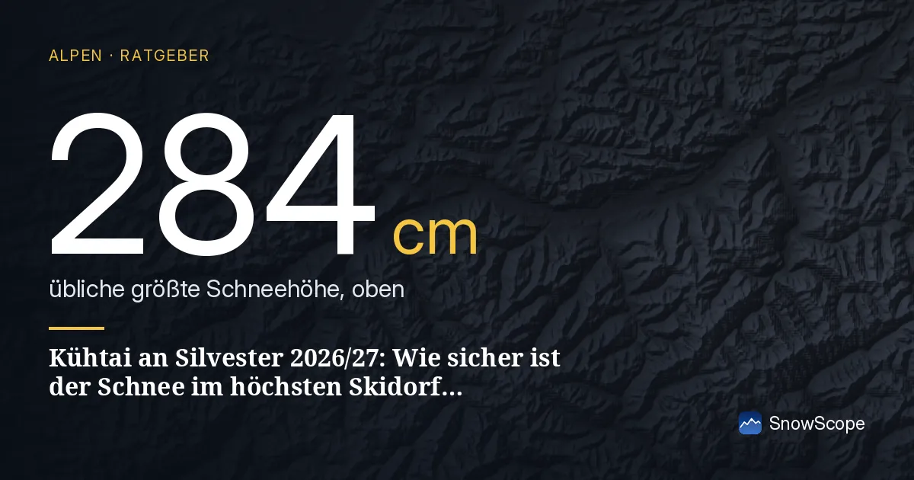
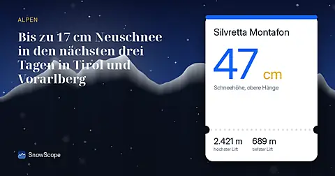

Kühtai an Silvester 2026/27: Wie sicher ist der Schnee im höchsten Skidorf Österreichs?
Sehr sicher: In 91 % von 46 Wintern lagen in Kühtai auf 2.223 m zu Neujahr mehr als 50 cm Schnee, an einem üblichen 31. Dezember sind es 90 cm. Heute, am 27. November, hat das Skigebiet oben 58 cm, und die Neuschneefälle der letzten Woche haben 45 cm gebracht.
Die Live-Schneeprognose für Kühtai in der SnowScope-AppSchneehöhen, Pulverschnee-Alarme und 3D-Karte, gratis.
Warum Kühtai über die Feiertage so verlässlich ist
Das Dorf liegt auf 1.939 m und damit höher als fast jedes andere Skidorf in Österreich; die Lifte reichen bis 2.507 m. Wo andere Tiroler Gebiete um Weihnachten mit Regen bis auf mittlere Höhen kämpfen, fällt in Kühtai meist Schnee.
Die Bilanz zeigt das deutlich: Eine geschlossene Schneedecke von mindestens 30 cm gibt es hier in einem normalen Winter ab Anfang November, und der schwächste Winter der 46, 2024-25, erreichte immer noch 127 cm.
Silvester und Neujahr in Zahlen
Am 25. Dezember liegen auf 2.223 m üblicherweise 82 cm, am 31. Dezember 90 cm, am 6. Januar 96 cm. In einem schwachen Winter, einem von zehn, sind es zu Silvester etwa 57 cm, in einem guten 123 cm.
Der heutige Stand passt dazu: 38 cm auf 2.223 m, ziemlich genau ein normaler Ende-November-Wert von 45 cm. Bis Montag bleibt es trocken.
Die Silvesterwoche planen
Kühtai ist klein und überschaubar, mit Hotels direkt an der Piste. Für Familien ist das der größte Vorteil: kein Skibus, kurze Wege, und die Kinder können nach der Skischule direkt vor dem Hotel weiterfahren.
An Silvester selbst geht es im Dorf ruhiger zu als in den großen Partyorten. Wer feiern möchte, ist in einer guten halben Stunde in Innsbruck; wer Ruhe will, bleibt oben.
Die Straße über das Kühtai ist im Winter von Ötz her offen, kann aber bei Schneefall und Lawinengefahr kurzfristig gesperrt werden; Schneeketten gehören ins Auto.
Langlaufen und Winterwandern
Neben den Pisten hat Kühtai gespurte Loipen auf Höhe des Dorfes und Winterwanderwege an den Speicherseen. In einem Winter mit gutem Start sind sie meist schon vor Weihnachten offen, weil der Schnee auf dieser Höhe nicht wie in den Tälern wegtaut. Für Langläufer ist Kühtai damit eine der wenigen sicheren Adressen für die Feiertage in Tirol.
Häufige Fragen zu Kühtai im Winter
Wann beginnt die Saison? In einem normalen Winter liegt die Schneedecke ab Anfang November bei 30 cm oder mehr, und das Skigebiet öffnet meist im Laufe des Novembers. In diesem Jahr ist der Start pünktlich.
Ist Kühtai gut für Anfänger? Ja, die Pisten rund um das Dorf sind breit und die Wege kurz. Wer mehr Abwechslung sucht, findet am Pirchkogel und an den obersten Liften steilere Hänge.
Wie kalt ist es an Silvester? Auf über 1.939 m sind Tageshöchstwerte unter null normal; die Feuerwerke im Dorf finden meist bei klarem Frost statt. Warme Kleidung ist wichtiger als in den Tälern.
Gibt es Alternativen in der Nähe? Hochoetz liegt auf der anderen Seite des Passes, Sölden und das Stubaital sind gut eine Stunde entfernt, falls man an einem Tag einen Gletscher fahren will.
Wie kommt man ohne Auto hin? Mit dem Zug bis Ötztal-Bahnhof und weiter mit dem Bus über Ötz; in der Saison fahren außerdem Skibusse aus Innsbruck. Wer mit dem Zug anreist, spart sich die Kettenfrage auf der Passstraße.
Wenn der Dezember trocken bleibt
Selbst dann ist Kühtai gut aufgestellt: Der Schnee von November bleibt in dieser Höhe liegen, die Beschneiung ergänzt ihn, und ein üblicher 15. Dezember hat bereits 71 cm. Der schneereichste Monat ist meist der März mit rund 159 cm; Silvester ist also schon solider Winter, aber noch nicht der Höhepunkt.
Tägliche Werte für Tal, Mitte und Gipfel: Kühtai Schneehöhe und Prognose.
Tipps für Skifahrer
- Silvesterwoche früh buchen: Kühtai hat nur wenige Betten, und sie sind direkt an der Piste.
- Schneeketten mitnehmen; die Passstraße kann bei Neuschnee kurzfristig gesperrt sein.
- Für den 31. Dezember: morgens skifahren, nachmittags ist es auf den Pisten am leersten.
- Mehr dazu: Kühtai im Dezember, Preise und Anreise und die Seite Österreich.
Zu diesen Zahlen
Schneewerte: die SnowScope-Schneekarte und -Vorhersage von heute und unsere Bilanz von 46 vergangenen Wintern pro Skigebiet (eine Schätzung für die Fläche, keine Meldung des Skigebiets).
Offizielle Lawinenlageberichte: Avalanche.report – Euregio Tyrol
Diesen Bericht zitieren
Für Forschung, Lehre oder Presse: Zahlen und Grafiken sind unter CC BY 4.0 mit dieser Quellenangabe frei nutzbar.
SnowScope (2026), Kühtai an Silvester 2026/27: Wie sicher ist der Schnee im höchsten Skidorf Österreichs?, https://snowscope.app/blog/de/2026/11/kuehtai-silvester-2026-27-schnee-chancen-hoechstes-skidorf-oesterreichs.html, abgerufen am 2026-11-27
SnowScope (Atlas Labs). (2026, November 27). Kühtai an Silvester 2026/27: Wie sicher ist der Schnee im höchsten Skidorf Österreichs?. SnowScope snow reports. https://snowscope.app/blog/de/2026/11/kuehtai-silvester-2026-27-schnee-chancen-hoechstes-skidorf-oesterreichs.html
BibTeX
@misc{snowscope2026kuehtaisilvester202627sc,
author = {{SnowScope (Atlas Labs)}},
title = {Kühtai an Silvester 2026/27: Wie sicher ist der Schnee im höchsten Skidorf Österreichs?},
year = {2026},
month = nov,
howpublished = {\url{https://snowscope.app/blog/de/2026/11/kuehtai-silvester-2026-27-schnee-chancen-hoechstes-skidorf-oesterreichs.html}},
note = {Published 2026-11-27 22:24 UTC; accessed 2026-11-27}
}· CC BY 4.0 · Methoden, Daten und Werkzeuge →
Kühtai: Schnee und Temperatur nach Höhe, dieser Winter vs letzter (Werkzeuge) →
Kühtai folgen
Gratis: eine Nachricht, wenn Neuschnee kommt, und jeden Morgen die Vorhersage.
Weitere Schneeberichte

Schneeprognose Alpen für die nächsten 3 Wochen aus dem ECMWF-Ensemble (50 Mitglieder), NOAA GEFS und NASA MODIS: im Mittel 19,1 cm Neuschnee diese Woche (normal 17,8), dann nur 9 cm vom 1. bis 8. Dezember (normal 21,9). Isola 2000 74 % über normal, Chamonix 6 %.

Lech/Zürs führt mit 47 cm Mächtigkeit und 46 cm Neuschnee in 72 Stunden an. Alle 11 Skigebiete haben Schnee. Daten vom 22. November.